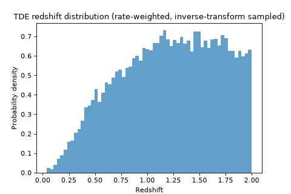
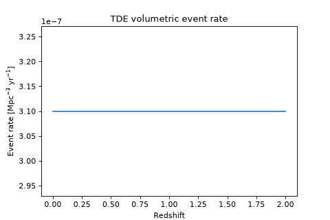
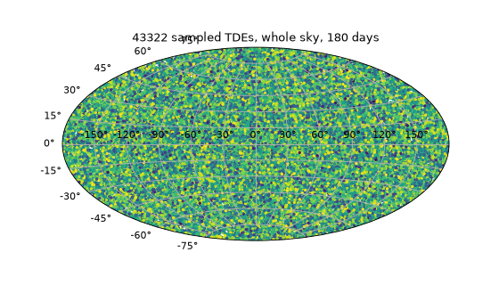

Transients#
uvex_transients.transients sits between the SED framework in
uvex_transients.models and the survey pipeline in uvex_transients.simulation. A
TransientBase subclass is a thin pairing of one
SpectralModel
(sed) with the metadata needed to
window a survey simulation around it – above all, a strict upper bound on how long the
transient could plausibly stay relevant
(duration_limit). Its
ExtragalacticTransient subclass adds a cosmological
volumetric event rate, turning that pairing into something that can draw its own Monte Carlo
population: given a comoving rate density and a patch of sky and time, how many events exploded
there, at what redshifts, and when.
This page covers that shared machinery – TransientBase/ExtragalacticTransient themselves,
not any one population. For the astrophysics, adopted rate, SED choice, and default parameter priors
of each implemented population (kilonovae, TDEs, LFBOTs, supernovae), see the Transients
gallery instead; for how SurveySimulator drives this
sampling against a real survey schedule, see Simulation.
Quick Look#
Every transient class is instantiated with no arguments – everything below works identically for
any of the built-in populations, so this page uses
TidalDisruptionEvent throughout as a running example:
import numpy as np
import matplotlib.pyplot as plt
from astropy import units as u
from uvex_transients.transients.TDEs import TidalDisruptionEvent
tde = TidalDisruptionEvent()
print(tde.sed) # the VanVelzenTDESED SED instance
print(tde.duration_limit) # 200.0 d
print(tde.redshift_limit) # 2
z = np.linspace(0, tde.redshift_limit, 200)
rate = tde.event_rate(z)
fig, ax = plt.subplots(figsize=(6, 4))
ax.plot(z, rate)
ax.set_xlabel("Redshift")
ax.set_ylabel(r"Event rate [Mpc$^{-3}$ yr$^{-1}$]")
ax.set_title("TDE volumetric event rate")
(Source code, png, hires.png, pdf)
{kind=link}
{kind=link}

A transient class is a pairing: sed
is exactly the SpectralModel documented in
Models (every eval/flux/mag method, every prior,
sample_parameters, all of it), and duration_limit/event_rate are the two pieces of
extra bookkeeping that let ExtragalacticTransient turn that SED into a self-sampling
population, covered below.
The Transient Object#
TransientBase itself is deliberately minimal: it holds
one SED instance and one duration, and nothing about how many events exist or where – that’s
ExtragalacticTransient’s job, covered in the next two sections.
tde.sed # the VanVelzenTDESED instance -- see user_guide_models
tde.duration_limit # 200.0 d
tde.cosmology # the astropy Cosmology used for D_L(z) and comoving volume
tde.duration_limit = 90 * u.day # override -- must be a positive time Quantity
A concrete subclass supplies exactly two class variables, checked at class-definition time (not
buried inside __init__, so a subclass that forgets one fails immediately at import, not partway
through a Monte Carlo run):
Class variable |
Meaning |
|---|---|
|
The |
|
The default
|
Ten populations ship with the package today, each pairing one of these SEDs with a rate and duration – see the linked Transients page for each one’s astrophysics and priors:
Class |
Default SED |
Duration |
Redshift limit |
|---|---|---|---|
30 d |
0.2 |
||
200 d |
2 |
||
100 d |
3 |
||
100 d |
0.8 |
||
100 d |
1.2 |
||
200 d |
0.5 |
||
20 d |
1 |
||
100 d |
0.5 |
||
100 d |
0.5 |
||
600 d |
4 |
See also
Writing your own population – a new SED, a new DEFAULT_MODEL/DEFAULT_DURATION pairing,
an event_rate(z) – is covered end to end in
Writing a Custom Transient.
Volumetric Rates and Redshift Sampling#
ExtragalacticTransient is the abstract base every
extragalactic population above subclasses. Concrete subclasses implement two abstract members –
rate, the fiducial rate
normalization \(R_0\) (a single, possibly cosmology-dependent
Quantity), and
rate_shape(), the dimensionless
redshift shape \(f(z)\) – rather than
event_rate() directly.
event_rate() itself is a thin,
already-implemented product of the two, \(R(z;A)=A f(z)\), the comoving event rate density in
events / Mpc3 / yr as a function of redshift. rate_shape must be NumPy-vectorized –
called once, across a whole grid, never in a per-event loop:
tde.event_rate(0.5) # a scalar rate at z=0.5
tde.event_rate(np.linspace(0, 2, 50)) # the same function, vectorized
From Rate to a Redshift Distribution#
event_rate alone isn’t yet something you can sample from – it’s a rate density, not a
probability distribution, and it needs to be weighted by the comoving volume element and the
cosmological time-dilation between rest-frame rate and observer-frame duration. On first access,
redshift_grid,
luminosity_distance_grid, and
integrated_rate all trigger
one lazy build: event_rate is tabulated once, on a grid of
redshift_grid_size points spanning
[0, redshift_limit], weighted by
then integrated (via cumulative trapezoidal quadrature) into both a total –
integrated_rate, the expected count per steradian per unit observer time – and a CDF
used to draw redshifts by inverse-transform sampling:
z_samples = tde.sample_event_redshift(20000, rng=0)
fig, ax = plt.subplots(figsize=(6, 4))
ax.hist(z_samples, bins=60, density=True, color="C0", alpha=0.7)
ax.set_xlabel("Redshift")
ax.set_ylabel("Probability density")
ax.set_title("TDE redshift distribution (rate-weighted, inverse-transform sampled)")

{kind=link}
{kind=link}

{kind=link}
{kind=link}
sample_event_redshift() is the
one-line version of that inversion; luminosity_distance_grid caches \(D_L(z)\) at the same
grid points, so a caller with a batch of already-sampled redshifts gets \(D_L\) via a cheap
numpy.interp() against it rather than a second cosmology.luminosity_distance call
(exactly what generate_events() does – see
Simulation).
Important
All of this is cached and rebuilt lazily, keyed off (cosmology, redshift_limit,
redshift_grid_size) – reassigning any of cosmology,
redshift_limit, or
redshift_grid_size invalidates
the cache, so the next access rebuilds it against the new value rather than silently reusing a
stale one. event_rate itself is only ever evaluated once per rebuild, no matter how many
events are subsequently sampled from it.
Rate Uncertainty and All-Sky Yield#
Everything above assumes the rate normalization \(R_0=\) rate is known exactly. In
practice, a literature rate comes with its own uncertainty, and Yield Statistics derives
confidence bounds throughout that carry it through to a final expected-detection estimate. On the
transient class itself, that uncertainty is a single class variable:
TidalDisruptionEvent.RATE_CI # None -- no rate uncertainty sourced for this class yet
Kilonova.RATE_CI # (0.0755..., 4.3208...) -- multiplicative (lower, upper) factors
RATE_CI is a pair of
multiplicative factors on rate (not absolute bounds), at a 90% confidence level by
convention – if a publication reports \(R_0{}^{+\Delta R_+}_{-\Delta R_-}\), that’s
((R_0 - dR_minus) / R_0, (R_0 + dR_plus) / R_0). Multiplicative factors, rather than a fixed
Quantity pair, mean the same RATE_CI applies unchanged to a rate that is itself
cosmology-dependent. Leaving it at its default of None (as every built-in population does
today, except Kilonova) means no rate uncertainty
has been sourced yet – every bound below then collapses to the point estimate, twice over, rather
than silently reading as “the rate is known exactly.”
Every rate-derived quantity has a plain point-estimate property and a ..._ci-suffixed bounds
counterpart built from RATE_CI:
Point estimate |
Bounds |
Meaning |
|---|---|---|
The fiducial normalization \(R_0\) itself. |
||
Per-steradian, per-observer-year rate integrated over redshift (see above). |
||
|
||
|
None of these know anything about a particular survey’s footprint – they’re the \(\mu_0\)
that ExposureCatalog and
compute_yield_summary() restrict down
to the footprint an actual schedule swept out (see Simulation).
effective_volume (\(\mathcal
V\) in Yield Statistics) is the rate-weighted comoving volume integrated_rate is built
from, with rate’s own normalization divided back out – it depends only on rate_shape,
cosmology, and redshift_limit, so it carries no rate-normalization uncertainty of its own.
See Yield Statistics for the full derivation of every bound above, and Simulation for how they combine with a real survey schedule’s footprint and a Monte Carlo catalog’s detection efficiency into a final yield estimate.
Sampling Events#
With a redshift distribution in hand, ExtragalacticTransient can draw an actual Monte Carlo
population: how many events, where, when, and with which SED parameters.
How Many Events#
sample_event_count() converts
integrated_rate into an expected count over a given solid angle and duration, then draws
a Poisson realization of it:
n = tde.sample_event_count(solid_angle=100 * u.deg**2, duration=180 * u.day, seed=0)
duration above can also be given as a t_start/t_end pair instead – both
sample_event_count and sample_events_on_healpix_grid below resolve it the same way.
Drawing a Full Population#
sample_events_on_healpix_grid() is
the main event: it draws the count above, then places each event uniformly at random within one of
a set of eligible HEALPix pixels (optionally jittered to a sub-pixel position via jitter; see
below), assigns it a redshift from sample_event_redshift, an explosion time drawn uniformly
across the sampling window, and a per-event parameter seed – rather than fully-sampled physical
SED parameters, which are meant to be regenerated lazily, on demand, from that seed (see
Parameter Seeds, Not Parameters below).
from astropy.time import Time
events = tde.sample_events_on_healpix_grid(
nside=32,
t_start=Time("2025-01-01"),
duration=180 * u.day,
seed=0,
)
print(f"Sampled {len(events)} events.")
fig = plt.figure(figsize=(7, 4))
ax = fig.add_subplot(111, projection="aitoff")
ax.grid(True)
ra = events["coord"].ra.wrap_at(180 * u.deg).radian
ax.scatter(ra, events["coord"].dec.radian, s=4, c=events["redshift"], cmap="viridis")
ax.set_title(f"{len(events)} sampled TDEs, whole sky, 180 days")

{kind=link}
{kind=link}

{kind=link}
{kind=link}

{kind=link}
{kind=link}
By default every pixel of the nside grid is eligible, as above; pixel_mask (a boolean mask
over the full grid) or pixel_ids (an explicit array of pixel indices) restrict sampling to a
subset – exactly how
generate_events() restricts each time bin’s
sampling to only the HEALPix pixels the survey schedule actually observed during that bin (see
Simulation), rather than sampling the whole sky and discarding almost everything.
The returned table has one row per sampled event:
Column |
Type |
Meaning |
|---|---|---|
|
int |
Sampling pixel, at the |
|
float |
Sub-pixel offset within |
|
Sky position, derived from |
|
|
float |
Drawn from |
|
Drawn uniformly across |
|
|
int |
Regenerates this event’s physical SED parameters on demand – see below. |
Parameter Seeds, Not Parameters#
Notice what’s not in that table: no amplitude, no rise time, no temperature – none of the SED’s
own physical parameters. Sampling a full parameter set for every event up front would be wasted
work for the overwhelming majority of a freshly-sampled population that never survives screening
(see filter_by_limiting_magnitude() in
Simulation), and would mean sample_events_on_healpix_grid’s own output schema
depends on which SED a transient type happens to use. Instead, only a parameter_seed is
stored – one independent, individually-storable seed per event (drawn from a single spawned tree,
so no two events, however many are sampled, ever share a stream) – and the actual parameters are
regenerated from it later, exactly once needed, via
sample_parameters():
seed = int(events["parameter_seed"][0])
params = tde.sed.sample_parameters(size=1, rng=np.random.default_rng(seed))
This is exactly what sample_parameters() does for a
single reconstructed event, and what
filter_by_limiting_magnitude()/
filter_by_snr() do in batch across a whole
catalog – see Simulation for both.
Reproducibility#
Every stochastic call on this page takes a seed/rng argument (an integer, an existing
numpy.random.Generator, or None for non-reproducible entropy), the same way
sample_parameters() does in
Models. sample_events_on_healpix_grid in particular spawns one tree of
independent child streams from its own seed – one per stochastic draw it makes internally
(the event count, pixel assignment, jitter, explosion time, redshift, and the parameter-seed
spawn point itself) – so that no two of those draws, and no two sampled events’ own
parameter_seed values, can ever collide, regardless of how many events end up being sampled.
The same seed therefore always reproduces the same population, down to the last
parameter_seed.
See the Transients gallery for the astrophysics, adopted rate, and default priors of each
implemented population, Writing a Custom Transient for writing your own, and
uvex_transients.transients in the API reference for exhaustive method-by-method
detail.